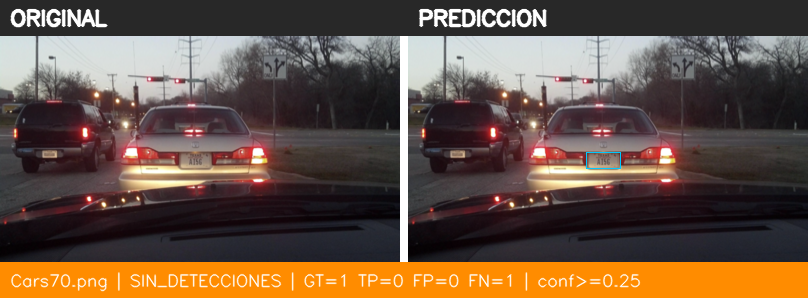
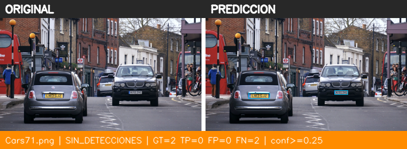
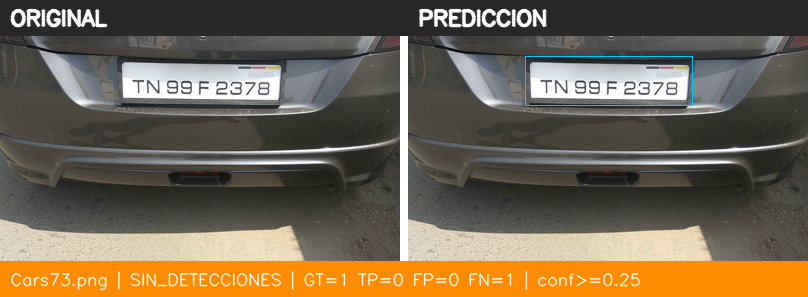
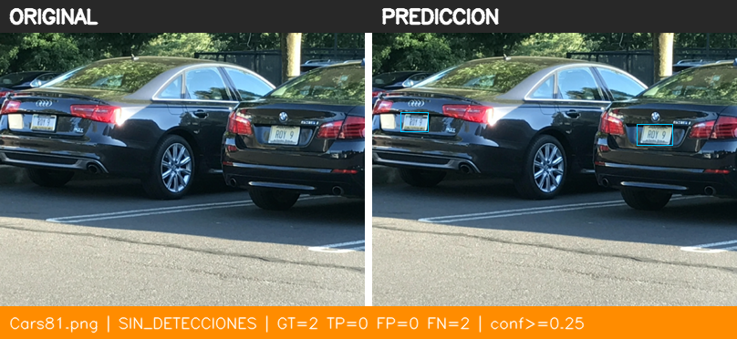

Izquierda: imagen original sin marcas. Derecha: inferencia (conf ≥ 0.25). Verde = acierto (IoU ≥ 0.5), rojo = falso positivo, cian fino = ground truth.
| run | img320 |
| model | runs/train/img320/weights/best.pt |
| image_size | 320 |
| selection_split | val |
| selection_criterion | max val mAP50-95 |
| val_candidates | {"img320": {"epoch": 41, "val_mAP50": 0.02873, "val_mAP50-95": 0.00645}, "img416": {"epoch": 49, "val_mAP50": 0.01168, "val_mAP50-95": 0.00192}} |
| ultralytics_test_mAP50 | 0.0086 |
| ultralytics_test_mAP50-95 | 0.0025 |
| confidence_threshold | 0.25 |
| iou_match_threshold | 0.5 |
| test_images | 5 |
| test_ap50 | 0.0068 |
| test_tp | 0 |
| test_fp | 0 |
| test_fn | 7 |
| test_precision | 0.0 |
| test_recall | 0.0 |
| test_f1 | 0.0 |
| images_correctas | 0 |
| images_incorrectas | 0 |
| images_sin_detecciones | 5 |



